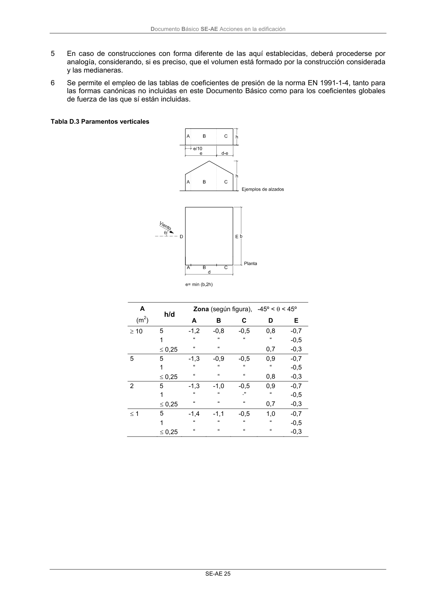

DB-SE-AE Acciones en la edificación · edición 2009-04 · capa oficial
Documento DB-SE-AE-oficial · SHA-256 del PDF 26116e5088955f0c6963a6187270cad282e1e7bf5a53a90f695c8fa50b4e4487
Página física 29 de 46.
Copia fiel del PDF fuente · Fuente oficial
Ficha de la disposición en la fuente oficial
Formato: Texto de la página (Markdown)
Documento Básico SE-AE Acciones en la edificación SE-AE 25 5 En caso de construcciones con forma diferente de las aquí establecidas, deberá procederse por analogía, considerando, si es preciso, que el volumen está formado por la construcción considerada y las medianeras. 6 Se permite el empleo de las tablas de coeficientes de presión de la norma EN 1991-1-4, tanto para las formas canónicas no incluidas en este Documento Básico como para los coeficientes globales de fuerza de las que sí están incluidas. Tabla D.3 Paramentos verticales Zona (según figura), -45º < θ < 45º A (m2) h/d A B C D E ≥ 10 5 -1,2 -0,8 -0,5 0,8 -0,7 1 “ “ “ “ -0,5 ≤ 0,25 “ “ 0,7 -0,3 5 5 -1,3 -0,9 -0,5 0,9 -0,7 1 “ “ “ “ -0,5 ≤ 0,25 “ “ “ 0,8 -0,3 2 5 -1,3 -1,0 -0,5 0,9 -0,7 1 “ “ ·” “ -0,5 ≤ 0,25 “ “ “ 0,7 -0,3 ≤ 1 5 -1,4 -1,1 -0,5 1,0 -0,7 1 “ “ “ “ -0,5 ≤ 0,25 “ “ “ “ -0,3
